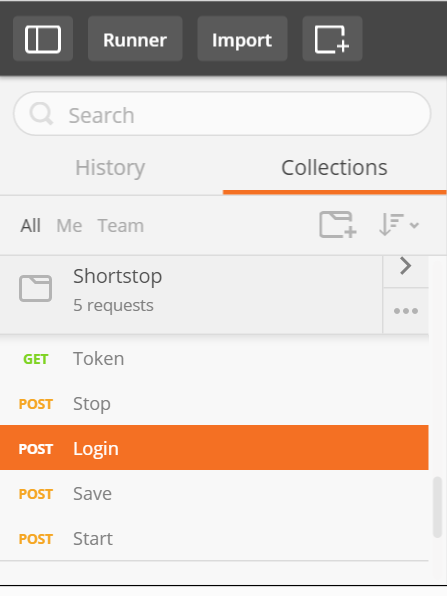

WALKOFF Documentation Current version 0.5.0b
Introduction
WALKOFF seeks to create an Active Cyber Defense development framework enabling orchestration capablities to be written once and deployed across WALKOFF-Enabled orchestration tools. The WALKOFF framework makes it easy to develop and integrate cyber defensive capabilities across WALKOFF-enabled orchestration platforms. One of the benefits of WALKOFF is its ability to combine a multitude of NSA endorsed standards such as OpenC2 and STIX/TAXII into a deployable active cyber defense package.
Getting Started
Setup
The following has been successfully tested on: Linux, Mac OSX, and Windows.
- Download https://github.com/IAD-Makes-Org/walkoff
- Install python2.7.9 or later
- run setup.py to install dependencies automatically
- Note: To run the web server in https; certificates must be placed by default in the data folder. (These paths can be changed in the configuration)
Walkthrough
Executing a Basic Workflow
This section covers running an example workflow by making calls through WALKOFF's REST api.
Start service
- run main.py to start the service, displays:
* Running on https://127.0.0.1:5000/
Postman
The following assumes use of the chrome app Postman, though any rest capable tools may be used.
- In Chrome | app-store | search for postman rest client | Add to Chrome
Import predefined rest commands
- In Postman | Settings | Data | Choose Files | Open: walkoff\data\debug\Backup.postman_dump.json
Login
- Show sidebar | Shortstop | Login 
- In Login | Send
- If you see

 Bring up a Chrome window (not postman), visit https://127.0.0.1:5000/login, click connect anyway, when you see the login form return to postman and try loging in again.
Bring up a Chrome window (not postman), visit https://127.0.0.1:5000/login, click connect anyway, when you see the login form return to postman and try loging in again.
Running Hello World Workflow
An authentication token is required to execute a workflow. Request a token and use it in the execute play command for the hello world workflow.
- Show sidebar | Shortstop | Get Token | Send
- In Token | GET https://127.0.0.1:5000/ | Send | Copy auth_token value
- Show sidebar | Play | POST Execute Play
- In Execute Play | Headers | Authentication-Token | Paste token
- In Execute Play | POST | Ensure HelloWorldWorkflow is in URL: https://127.0.0.1:5000/playbook/play/HelloWorldWorkflow/execute
- click Save
- click Send
- web server displays:


127.0.0.1 - - [02/Jun/2016 09:47:08] "POST /playbook/play/HelloWorldWorkflow/execute HTTP/1.1" 200 -
I SAY THIS BEFORE EVERY FUNCTION: HELLO WORLD
Documentation
Overview
This section provides an overview of the WALKOFF engine implementation and structure, as well as a listing of the different WALKOFF API commands.
Engine
Play Execution

- Play is initiated
- Checks to see if the play_status is NULL or <-status:end->
- If the play has ended, any custom shutdown procedures are executed for each app and then the results are returned.
- Checks to see if a device instance already exists. If not a new device instance is created.
- Parses and prepares the input and executes any keywords.
- Passes the prepared input and executes the defined function and stores the returned value
- Parses and prepares the output of the function and executes any keywords
- If an error occurs goes to the next step defined in the error field.
- If no errors occured the prepared output is then evaluated and the next step is determined; upon which the cycle is repeated until <-status:end-> or NULL is returned.
Architecture Diagram

- API/mainAPI - Provides the interface to the web server, api functions, configuration, users and roles, devices, and databases
- Core/logging - Provides the interface to logging functions
- Core/config - Provides the interface for parsing and storing options defined in data/walkoff.config
- Core/interface - Defines functions for displaying WALKOFF apps custom interfaces.
- Data/walkoff.db - Database which stores users, roles, and device/app configurations
- Auth/forms - Defines forms and validates API input
- Auth/formChecks - Defines custom/non-standard validators for the forms class.
- API/executionAPI - Provides an interface to the functionality for non-manual execution of a play.
- Signals/executionSignals - Defines signals to send to the automatic execution control thread.
- Core/execution - Defines automatic execution control thread functionality.
- Core/Scheduler - Parses and checks to see if play should be executed.
- Core/eventQueue - Custom data structure used in execution.
- Core/playbook - Imports, parses, and exports the playbook file in playbook.json.
- Core/play - Manages and executes a single play within the playbook.
- Core/step - Manages and executes a single step within the playbook.
- Core/app - parent class for WALKOFF apps which retrieves an apps custom configuration from the database.
- Core/Filters - contains files enabling filter functionality
- Core/Flags - contains files enabling flag functionality
- Core/Keywords - contains files enabling keyword functionality
Configuration File
The configuration file lies within the data folder and is named walkoff.config. It consists of the below categories with the following options.
- Auth - Details security related configuration options
- Execution - Details automated execution configuration options
- Global - Details configuration options that affect the system as a whole
- Interface - Details web server and GUI (future) related configuration options
- Logging - Details logging related configuration options
| Key | Value Format/Options | Description |
|---|---|---|
| https | boolean - true/false | Sets whether to enable https or not. Certificates must be generated in order to use HTTPS functionality. |
| TLS_version | 1.2, 1.1 | Determines what version of TLS to use. https must be enabled. |
| certificatePath | pathname | Sets the location of the public certificate path. https must be enabled. |
| privateKeyPath | pathname | Sets the location of the private certificate path. https must be enabled. |
| Key | Value Format/Options | Description |
|---|---|---|
| maxProcesses | integer | sets the maximum number of workflows to run at a time when automatic execution mode is running. |
| secondsDelay | integer | when automatic execution mode is running sets the interval in seconds to wait between cycles. |
| Key | Value Format/Options | Description |
|---|---|---|
| appsPath | pathname | Sets the location of the apps |
| dbPath | pathname | Sets the location of the walkoff database |
| playbookPath | pathname | Sets the location of the walkoff playbook file |
| Key | Value Format/Options | Description |
|---|---|---|
| debug | boolean - true/false | Sets whether to run the web server in debug mode |
| defaultServer | boolean - true/false | Sets whether to use the default python web server |
| host | ip address | Sets the web server ip address |
| port | integer | Sets the web server port |
| Key | Value Format/Options | Description |
|---|---|---|
| logPath | pathname | Sets the location where logs are stored |
Note on Databases
The WALKOFF reference implementation utilizes SQLAlchemy and uses SQLLite by default. SQLAlchemy provides a generic interface for a number of different databases including SQLlite, Postgresql, MySQL, Oracle, MS-SQL, Firebird, and Sybase to choose from and plug in based upon the needs of your deployment.
See http://www.sqlalchemy.org/ for more information.
API
cURL Example
Executing a play
curl -d --cert *public cert path* --insecure --header "Authentication-Token:*authentication token*" https:// *IP*:*PORT* /playbook/play/HelloWorldWorkflow/execute curl -d --cert shortstop.public.pem --insecure --header "Authentication-Token:WyIxIiwiMGQzM2UyMWViZTVkMDg3NmYxODNhM2FiM2E2MmJkYmMiXQ.CjPJuA.sBEE_Woe8Ie-ge-1cFFBW9tsDPc" https://127.0.0.1:5000/playbook/play/HelloWorldWorkflow/execute
Python Example
Executing a play
import httplib, urllib, ssl
params = urllib.urlencode({})
headers = {"Authentication-Token":"WyIxIiwiMGQzM2UyMWViZTVkMDg3NmYxODNhM2FiM2E2MmJkYmMiXQ.CjPJuA.sBEE_Woe8Ie-ge-1cFFBW9tsDPc"}
conn = httplib.HTTPSConnection("127.0.0.1:5000", context=ssl._create_unverified_context())
conn.request("POST", "/playbook/play/HelloWorldWorkflow/execute", params, headers)
response = conn.getresponse()
print response.status, response.reason, response.read()
conn.close()
Functions
Notes on parameter data types
- The FieldList(Type) refers to the ability to pass an x number of Type within the parameters. The parameter format adheres to the following pattern: "varName-x" x incrementing for each parameter for that variable being passed. Below is an example of creating a new user and the format that should be used.
username:bob password:anewpassword role-0:playbook-admin role-1:system-admin role-2:user
Therefore when these parameters are submitted, a user bob will be created with the password "anewpassword" and he was assigned 3 roles: playbook-admin, system-admin and user.
System Functions
| Name | Description | URL | Parameters |
|---|---|---|---|
| Login | Logs in and returns the API Key | /login | Email:String, Password:String |
| Start | Starts the automatic playbook execution thread | /execution/system/start | None |
| Stop | Stops the automatic playbook execution thread | /execution/system/stop | None |
| Save | Saves changes to the configuration, playbook, or commits changes to the database | /save/[string:object]
Object options -
|
None |
| Revert | Reverts to the backup config or playbook file. !!!WARNING - OVERWRITES THE DESIGNATED FILES WITH THE BACKUPS!!! | /revert/[action:string]
Action Options -
|
None |
Playbook Functions
| Name | Description | URL | Parameters |
|---|---|---|---|
| Display | Displays the playbook | /playbook/display | None |
Play Functions
| Name | Description | URL | Parameters |
|---|---|---|---|
| Add | Adds a new play to the playbook | /playbook/play/add | Name:String |
| Display | Displays a play | /playbook/play/[string:name]/display | None |
| Execute | Executes a play | /playbook/play/[string: name]/execute | None |
| Remove | Removes a play from the playbook | /playbook/play/[string: name]/remove | None |
| Display Play Options | Displays the options for a play | /playbook/play/[string: name]/options/display | None |
| Edit Play Options | Edits the options in a play | /playbook/play/[string: name]/options/edit | autoRun:boolean, sDT:dateTime, eDT:dateTime, interval:decimal |
Step Functions
| Name | Description | URL | Parameters |
|---|---|---|---|
| Display | Displays a step within a play | /playbook/play/[string: playName]/[string:step]/display | None |
| Edit | Edits the parameters of a specified step | /playbook/play/[string: playName]/[string:step]/edit | id:string, to:FieldList(String), app:String, device:String, action:String, input:String, error:FieldList(String) |
| Remove | Removes a step from a play | /playbook/play/[string: playName]/[string:step]/remove | None |
| Add | Adds a new default step to a play | /playbook/play/[string: playName]/steps/add | None |
Config Functions
| Name | Description | URL | Parameters |
|---|---|---|---|
| Display | Displays a configuration file section | /configuration/[string: section]/display | None |
| Edit | Edits a configuration file section | /configuration/[string: section]/edit | key:string, value:string |
| Add | Adds a new key:value pair to a configuration file section | /configuration/[string: section]/add | key:string, value:string |
| Remove | Removes a key:value pair from the specified configuration file section | /configuration/[string:section]/remove | key:string |
Device Functions
| Name | Description | URL | Parameters |
|---|---|---|---|
| Add | Adds a new device configuration | /configuration/[string:app]/devices/add | name:string, app:string, username:string, pw:string, ipaddr:string, port:string |
| Display | Displays a device configuration | /configuration/[string:app]/devices/[string:device]/display | None |
| Remove | Removes a device configuration | /configuration/[string:app]/devices/[string:device]/remove | Parameters |
| Edit | Edits a device configuration | /configuration/[string:app]/devices/[string:device]/edit | name:string, app:string, username:string, pw:string, ipaddr:string, port:string |
App Functions
| Name | Description | URL | Parameters |
|---|---|---|---|
| Display | Displays a given template/custom interface for a WALKOFF app | /apps/[string:name]/display | None |
User Functions
| Name | Description | URL | Parameters |
|---|---|---|---|
| Display | Displays a users details | /users/display/[int: id] | None |
| Edit | Edits a users details | /users/edit/[int: id] | password:String, role:FieldList(String) |
| Remove | Removes a user | /users/remove/ |
None |
| Add | Adds a new user | /users/add | username:String, password:String, role:FieldList(String) |
Role Functions
| Name | Description | URL | Parameters |
|---|---|---|---|
| Display | Displays the details of a role | /roles/display/[int: id] | None |
| Edit | Edits a role | /roles/edit/[int :id] | description:string |
| Remove | Removes a role | /roles/remove/[int: id] | None |
| Add | Adds a new role | /roles/add | name:string, description:string |
WALKOFF Standard
Overview
The WALKOFF framework seeks to standardize two aspects of orchestration. The apps which are where integration logic, analytics, and other capabilities are containted for automatic execution and the workflows which define how the functions should execute in accordance with local policy. A "hello world" app and workflow template can be found in the code base.
WALKOFF Apps
WALKOFF enabled apps are a folder/set of python scripts and web resources contained within the folder structure detailed below. All apps can be placed within the Core/apps folder.
-app_name -interface -static -main.py -display.py -__init__.py
- app_name - The root of the folder should be the same name as the app
- interface - Folder containing all HTML web pages
- static - Sub-Folder of Interface containing all Javascript, CSS, Images and other static web resources
- main.py - Python file where the capabilities for the app are written
- display.py - Python file for any server side interface code.
- __init__.py - python file turning the folder into a python module so that it may be read and executed.
main.py
from core import app
#There is an associated Hello world test workflow which can be executed
class Main(app.App):
def __init__(self, name=None, device=None):
#The parent app constructor looks for a device configuration and returns that as a dictionary called self.config
app.App.__init__(self, name, device)
#Functions and Variables that are designed to exist across functions go here
self.introMessage = "I SAY THIS BEFORE EVERY FUNCTION: HELLO WORLD"
#Every function in Main is an action that can be taken
#Every function needs to define an args argument which recieves a dictionary of input parameters
def helloWorld(self, args={}):
#LOOK AT YOUR CONSOLE WHEN EXECUTING
print self.introMessage
display.py
#Provides server side logic when loading a custom interface
def load(args={}):
#Server side logic goes here
return {}
WALKOFF Workflows
WALKOFF enabled workflows define the order in which capablities are executed when triggered and are contained within a JSON structured file. These workflows can be restricted based upon a time period or based upon events among many other variables.
playbook.json
{
"HelloWorldWorkflow": {
"options": {
"autorun": "true",
"scheduler": {
"eDT": "2016-3-15 12:00:00",
"interval": 0.1,
"sDT": "2016-1-1 12:00:00"
}
},
"play": [
{
"action": "helloWorld",
"app": "HelloWorld",
"device": "hwTest",
"error": [
[]
],
"id": "start",
"in": {
},
"to": [
]
}
]
}
}
- "HelloWorldWorkflow" - The name of the play
- "options" - JSON Object containing play options
- "autorun" - True or False, whether the play should run automatically at a given interval.
- "scheduler" - Defines under what time conditions the play should execute.
- "sDT" - The starting date and time defined as "yyyy-mm-dd hh:mm:ss"
- "eDT" - The ending date and time defined as "yyyy-mm-dd hh:mm:ss"
- "interval" - decimal value in Minutes defining how often the play should be run between the starting and ending dates. Example: 0.1 = 10 second interval.
- "play" - Where the play steps are defined, each step being a json object.
- id - Name of the step. The first step should always be named "start"
- action - Name of the action to be taken. Should correspond with a function in a given app.
- app - Name of the app where the function is defined.
- device - Name of the configuration set to be used when executing the function. This allows for multiple instances to be created of the same app.
- in - Dictionary of Key:Value pairs for function arguments
- to - Defines the next step to be taken
- error - Defines the next step to be taken if an error occurs when executing.
Filters, Flags and Keywords
WALKOFF Flags, Filters, and Keywords enable a special category of functionality within WALKOFF. These modules located within the Core directory enable quick non-permanent functions to be executed. This allows for more advanced objects to be utilized, better decision making, and easier normalization and manipulation of advanced data types.
Filters
Filters are used within the Flags and Keywords objects described below to allow for the quick, temporary normalization of data for evaluation. Filters are contained within the Core/Filters folder and consist of a python module named after the name of the action. Examples of filters include a keyValue filter which returns the value, given a key or a length filter which converts an array to its length for future evaluation. Below is an example of a filter template using the length function.
def main(args, value):
try:
result = len(value)
return result
except Exception as e:
print e
return None
Filters consist of a main function which can be considered the execution entry point for the module. The filter should then input that step's output and then return a modified version of it in some aspect. Below is an example of a filter being used in a conditional testing for the length of a string.
"to": [
{"conditions":[
{"flag":"count", "args":{"type":"int", "operator":"e", "threshold":"45"}, "filters":[{"filter":"length", "args":{}, "type":"pre"}]},
], "next":"1"}
]
In this case a conditional is defined testing whether the input string is equal to 45. Before that conditional is executed, however, the filter is executed converting the string to its length and then testing it against the 45.
| Filter | Arguments | Return Value | Description |
|---|---|---|---|
| length | None | integer | Returns the length of the output object. |
Flags
Flag modules are involved in the decision making process and always return a boolean value as the result of some function. In the execution flow if a series of functions all return true the next step defined is taken. Examples of these conditionals include regular expression matching, a numeric conditional such as equals, greater than or less than, or some other given function. These flags can be written using the template below and placed in the Core/Flags folder.
import re
def main(args, value):
regex = args["regex"]
#Accounts for python wildcard bug
if regex == "*":
regex = "(.*)"
pattern = re.compile(regex)
matchObj = pattern.search(value)
if matchObj:
return True
return False
This example module is a python file with the name of the action, in this case called regMatch.py. A flag minimally includes a function called main which is the module's entry point. Flag modules always return a boolean (True/False) value.
Below is an excerpt from a workflow using the regmatch conditional.
"to": [
{"conditions":[
{"flag":"regMatch", "args":{"regex":"(.*)"}, "filters":[]},
], "next":"1"}
]
In this case an array of conditions is passed. In this example, the only condition is a flag object with the regMatch command. An argument is passed in with the regex which is matched against the output of that step. If the regMatch returns true, the flow moves on to the next step with id 1.
| Flag | Arguments | Return Value | Description |
|---|---|---|---|
| count |
operator - string
|
Boolean - True/False | Compares the output to the threshold using the designated comparison operator and returns True or False. |
| regMatch | regex - regular expression | Boolean - True/False | Attempts to match the output to a regular expression and returns true or false based upon if a match is found. |
Keywords
Keywords translates into a given object based upon the function given. Keywords are stored in the Core/Keywords folder and consist of a python module named after the action itself. The keyword module then consists of a function main which can be considered the module entry point and returns an object. Below is a template using the out keyword module.
def main(steps, args):
if args["id"] in steps:
step = steps[args["id"]]
return step.out
else:
return ""
Below is an excerpt from a workflow using the out keyword
"in": {
"call":"<- "action":"out", "args":{"id":"start"}, "filters":[]}->"
}
Keywords can be placed within strings using the "<-{object}->" format as seen above. In the case of the above example, the action out is defined and an id of start is passed in as an argument. This replaces the keyword with the out variable defined in step "start". This allows the orchestrator to pass in the result of start as an input to this step.
| Keyword | Arguments | Return Value | Description |
|---|---|---|---|
| out | id - the id of another step | object | returns the output of another step. |
FAQ
What is WALKOFF?
WALKOFF is a framework that makes it easy to develop and integrate cyber-defensive capabilities across WALKOFF-enabled tools to provide active cyber defense capabilities.
What is Active Cyber Defense and Orchestration?
Active Cyber Defense is a cyber defense strategy that integrates cyber defensive capabilities together to automatically defend a network. Orchestration is a class of cyber-security tools that integrate commercial cybersecurity tools and capabilities together and automates defensive processes in accordance with local policy.
I want to use WALKOFF apps and workflows; Am I limited to using the orchestrator built here?
Orchestrators of all shapes and sizes are able to become WALKOFF enabled and are not limited to how the WALKOFF reference implementation was built. As long as an orchestrator can read and execute the functions within a WALKOFF app and read and execute a WALKOFF workflow that orchestrator can be considered WALKOFF-enabled.
How do I join and contribute to the WALKOFF effort?
In the near future we will release more information on how individuals may contribute to the WALKOFF orchestrator and how developers can distribute their own WALKOFF apps
License
This work was prepared by an U.S. Government employee and, therefore, is excluded from copyright by Section 105 of the Copyright Act of 1976. Copyright and Related Rights in the Work worldwide are waived through the CC0 1.0 Universal license.
Disclaimer
Disclaimer of Warranty
This Work is provided "as is." Any express or implied warranties, including but not limited to, the implied warranties of merchantability and fitness for a particular purpose are disclaimed. In no event shall the United States Government be liable for any direct, indirect, incidental, special, exemplary or consequential damages (including, but not limited to, procurement of substitute goods or services, loss of use, data or profits, or business interruption) however caused and on any theory of liability, whether in contract, strict liability, or tort (including negligence or otherwise) arising in any way out of the use of this Guidance, even if advised of the possibility of such damage.
The User of this Work agrees to hold harmless and indemnify the United States Government, its agents and employees from every claim or liability (whether in tort or in contract), including attorneys' fees, court costs, and expenses, arising in direct consequence of Recipient's use of the item, including, but not limited to, claims or liabilities made for injury to or death of personnel of User or third parties, damage to or destruction of property of User or third parties, and infringement or other violations of intellectual property or technical data rights.
Nothing in this Work is intended to constitute an endorsement, explicit or implied, by the U.S. Government of any particular manufacturer's product or service.
Disclaimer of Endorsement
Reference herein to any specific commercial product, process, or service by trade name, trademark, manufacturer, or otherwise, in this Work does not constitute an endorsement, recommendation, or favoring by the United States Government and shall not be used for advertising or product endorsement purposes.